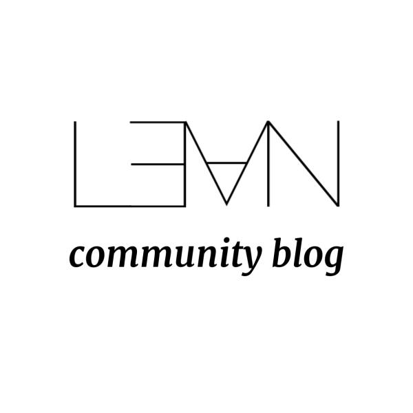
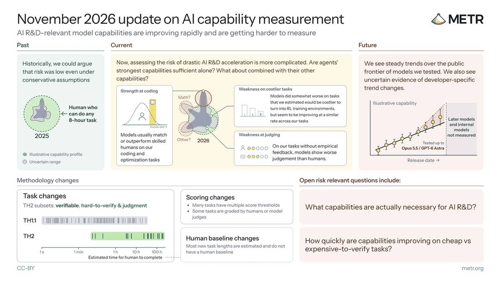
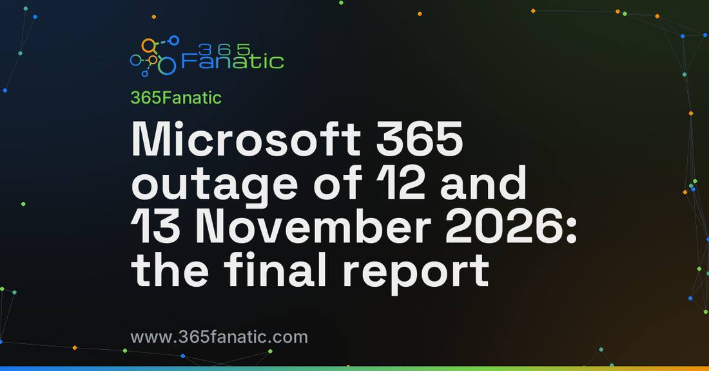

Facts first
Reporting and analysis are kept apart on every page. Sources and uncertainty are stated, not buried.

OpenRouter announced on November 22, 2026, that it has off-boarded three providers from its platform and removed 125 endpoints from Zero Data Retention eligibility after Dragos canary-token research found prompt theft inside AI inference providers. The researchers seeded about two million prompts with unique links and credentials between July and November; attackers stole data from inside three providers for months without their knowledge, and some stolen requests were flagged Zero Data Retention. OpenRouter notified all potentially affected customers and said the findings showed no breach of OpenRouter itself.
 Tesla Begins FSD v15 Rollout, Claims 25x Safety Gain With New Reality ViewTesla announced on X on November 21, 2026 that Full Self-Driving (Supervised) v15 is now starting to roll out to a first wave of customers, with wide release targeted for December. The release notes cite a new vision encoder shared between FSD, Robotaxi and Optimus, trained on millions of internet videos, which Tesla says improves the critical intervention rate by 25x, plus a new live Tesla Reality View visualization, fleet-learned navigation, and improved detection of road signs, potholes, debris, small animals and standing water, along with a speed-camera slowdown and Bike Rack Mode. Tesla disclosed no build number, vehicle eligibility list, or rollout regions, and FSD remains supervised.
Tesla Begins FSD v15 Rollout, Claims 25x Safety Gain With New Reality ViewTesla announced on X on November 21, 2026 that Full Self-Driving (Supervised) v15 is now starting to roll out to a first wave of customers, with wide release targeted for December. The release notes cite a new vision encoder shared between FSD, Robotaxi and Optimus, trained on millions of internet videos, which Tesla says improves the critical intervention rate by 25x, plus a new live Tesla Reality View visualization, fleet-learned navigation, and improved detection of road signs, potholes, debris, small animals and standing water, along with a speed-camera slowdown and Bike Rack Mode. Tesla disclosed no build number, vehicle eligibility list, or rollout regions, and FSD remains supervised. Amazon Nears $7.5B Deal to Buy AI Startup Decart, FT ReportsAmazon is in advanced talks to acquire Israeli AI startup Decart for about $7.5 billion, the Financial Times reported on Saturday, November 21, 2026, with a deal possible as early as next week; The Information reported the same figure. Neither company has confirmed the talks, and the Financial Times said the discussions could still fall apart. The price is up from about $7 billion reported by the Wall Street Journal on October 11, and Calcalist reported on November 18 that the structure combines cash, stock and earnouts with the founders staying five years. Decart was valued at about $4 billion in May after a $300 million funding round.
Amazon Nears $7.5B Deal to Buy AI Startup Decart, FT ReportsAmazon is in advanced talks to acquire Israeli AI startup Decart for about $7.5 billion, the Financial Times reported on Saturday, November 21, 2026, with a deal possible as early as next week; The Information reported the same figure. Neither company has confirmed the talks, and the Financial Times said the discussions could still fall apart. The price is up from about $7 billion reported by the Wall Street Journal on October 11, and Calcalist reported on November 18 that the structure combines cash, stock and earnouts with the founders staying five years. Decart was valued at about $4 billion in May after a $300 million funding round. TSMC and Samsung Pause Chip Shipments as New US Export Rules Reach Beyond AIA US Commerce Department interim final rule effective November 19, 2026 removed the verification routes foundries used to clear advanced-node chips as uncontrolled, and TSMC and Samsung paused some shipments to Chinese customers while seeking US export licences. The Financial Times reported the pause on November 19; Reuters reported TSMC halted 16nm-and-below orders from affected Chinese designers unless licensed. Nikkei Asia reported on November 20 that the rules reach beyond AI chips to everyday mobile and consumer silicon and to developers outside China, pushing Chinese designers back to 28nm and 40nm nodes. Neither foundry has publicly confirmed which product lines are frozen.
TSMC and Samsung Pause Chip Shipments as New US Export Rules Reach Beyond AIA US Commerce Department interim final rule effective November 19, 2026 removed the verification routes foundries used to clear advanced-node chips as uncontrolled, and TSMC and Samsung paused some shipments to Chinese customers while seeking US export licences. The Financial Times reported the pause on November 19; Reuters reported TSMC halted 16nm-and-below orders from affected Chinese designers unless licensed. Nikkei Asia reported on November 20 that the rules reach beyond AI chips to everyday mobile and consumer silicon and to developers outside China, pushing Chinese designers back to 28nm and 40nm nodes. Neither foundry has publicly confirmed which product lines are frozen.| WORLD & POLICY | 29 |
| MARKETS & INDUSTRY | 153 |
| AI FRONTIER | 295 |
| ROBOTICS & AI | 38 |
| WEB3 INFRASTRUCTURE | 5 |
| RESEARCH & SCIENCE | 10 |
OpenRouter Drops Three Providers After Researchers Catch Months of Prompt TheftOpenRouter announced on November 22, 2026, that it has off-boarded three providers from its platform and removed 125 endpoints from Zero Data Retention eligibility after Dragos canary-token research found prompt theft inside AI inference providers. The researchers seeded about two million prompts with unique links and credentials between July and November; attackers stole data from inside three providers for months without their knowledge, and some stolen requests were flagged Zero Data Retention. OpenRouter notified all potentially affected customers and said the findings showed no breach of OpenRouter itself.Alibaba Is Already Training Its Next Qwen Model on Its Own T-Head ChipsAlibaba CEO Eddie Wu said on the company's November 19 earnings call that Qwen is already training its next-generation model on chips from Alibaba's own T-Head semiconductor unit, and that its Bailian platform, known internationally as Model Studio, is already providing inference on Chinese-made chips. Wu said most of the new AI chip capacity Alibaba adds after 2027 will be domestic, with its own flagship chips first in line for training its foundation models. No model name, chip count, or performance figure was given, and no independent benchmark of T-Head chips against Nvidia parts has been published.Tesla Begins FSD v15 Rollout, Claims 25x Safety Gain With New Reality ViewTesla announced on X on November 21, 2026 that Full Self-Driving (Supervised) v15 is now starting to roll out to a first wave of customers, with wide release targeted for December. The release notes cite a new vision encoder shared between FSD, Robotaxi and Optimus, trained on millions of internet videos, which Tesla says improves the critical intervention rate by 25x, plus a new live Tesla Reality View visualization, fleet-learned navigation, and improved detection of road signs, potholes, debris, small animals and standing water, along with a speed-camera slowdown and Bike Rack Mode. Tesla disclosed no build number, vehicle eligibility list, or rollout regions, and FSD remains supervised.Amazon Nears $7.5B Deal to Buy AI Startup Decart, FT ReportsAmazon is in advanced talks to acquire Israeli AI startup Decart for about $7.5 billion, the Financial Times reported on Saturday, November 21, 2026, with a deal possible as early as next week; The Information reported the same figure. Neither company has confirmed the talks, and the Financial Times said the discussions could still fall apart. The price is up from about $7 billion reported by the Wall Street Journal on October 11, and Calcalist reported on November 18 that the structure combines cash, stock and earnouts with the founders staying five years. Decart was valued at about $4 billion in May after a $300 million funding round.TSMC and Samsung Pause Chip Shipments as New US Export Rules Reach Beyond AIA US Commerce Department interim final rule effective November 19, 2026 removed the verification routes foundries used to clear advanced-node chips as uncontrolled, and TSMC and Samsung paused some shipments to Chinese customers while seeking US export licences. The Financial Times reported the pause on November 19; Reuters reported TSMC halted 16nm-and-below orders from affected Chinese designers unless licensed. Nikkei Asia reported on November 20 that the rules reach beyond AI chips to everyday mobile and consumer silicon and to developers outside China, pushing Chinese designers back to 28nm and 40nm nodes. Neither foundry has publicly confirmed which product lines are frozen. Cursor Tells House It May Drop Chinese Open-Weight Models Over 'Geopolitical Risk'Two House committees released a joint investigative report on November 20, 2026, urging the removal of Chinese-developed open-weight AI models from federal systems and high-risk critical infrastructure. The House Committee on Homeland Security and the House Select Committee on China investigated Airbnb, Anysphere, and DoorDash after launching the inquiry in April 2026. Cursor, whose Composer 2 coding model was built on Moonshot AI's Kimi K2.5 and which SpaceX acquired in August 2026, told the committees it will "explore phasing out PRC-developed open-weight models because of geopolitical risk." The report makes 12 recommendations, including a national American open-weight initiative. Cursor has announced no successor model and no timeline.AI Agents Found a Zero-Day in Medical-Imaging Software and Got Root in 11 MinutesAutonomous AI agents run by a suspected China-linked operator found a previously unknown flaw in MONAI Label, an open-source medical-imaging annotation server, and used it to gain root access to a university server, Amazon Threat Intelligence reported on November 20, 2026. Given a single instruction, "obtain shell access," the agents went from mapping the application's API to writing files anywhere on the server in about 11 minutes. The flaw is CVE-2026-133968, rated 9.8 out of 10. A source fix was merged on October 19, but no patched release is available. Attribution is assessed with moderate confidence; no named group or government link has been established.Trump Vows a 'Tremendous Tax' on US Firms Building Data Centers AbroadPresident Donald Trump said on Friday, November 20, 2026, that the United States would penalize American companies that build data centers overseas, promising a "tremendous tax" on firms that do. Speaking at a White House news conference following his trip to Asia, he said, "We're not going to allow our companies to build data centers outside of our country." No bill, executive order, or mechanism has been published as of November 21, 2026, and a president cannot impose a tax without Congress. Meta, Alphabet, Amazon, Microsoft, and Oracle all have overseas data-center operations or deals worth billions of dollars.OpenRouter Warns MiniMax Prompts May Have Been Read by a Third PartyOpenRouter emailed customers on November 21, 2026, warning that prompts and outputs sent to MiniMax models "may have been read" by a third party. Security researcher HD Moore of Dragos planted unique test URLs in prompts sent to MiniMax models between July and October 2026; a third party opened those links 40 to 130 hours after the requests, whether MiniMax served them directly or another provider forwarded them. OpenRouter removed the Zero Data Retention label from the affected MiniMax endpoints while it awaits MiniMax's own account of what happened.
Cursor Tells House It May Drop Chinese Open-Weight Models Over 'Geopolitical Risk'Two House committees released a joint investigative report on November 20, 2026, urging the removal of Chinese-developed open-weight AI models from federal systems and high-risk critical infrastructure. The House Committee on Homeland Security and the House Select Committee on China investigated Airbnb, Anysphere, and DoorDash after launching the inquiry in April 2026. Cursor, whose Composer 2 coding model was built on Moonshot AI's Kimi K2.5 and which SpaceX acquired in August 2026, told the committees it will "explore phasing out PRC-developed open-weight models because of geopolitical risk." The report makes 12 recommendations, including a national American open-weight initiative. Cursor has announced no successor model and no timeline.AI Agents Found a Zero-Day in Medical-Imaging Software and Got Root in 11 MinutesAutonomous AI agents run by a suspected China-linked operator found a previously unknown flaw in MONAI Label, an open-source medical-imaging annotation server, and used it to gain root access to a university server, Amazon Threat Intelligence reported on November 20, 2026. Given a single instruction, "obtain shell access," the agents went from mapping the application's API to writing files anywhere on the server in about 11 minutes. The flaw is CVE-2026-133968, rated 9.8 out of 10. A source fix was merged on October 19, but no patched release is available. Attribution is assessed with moderate confidence; no named group or government link has been established.Trump Vows a 'Tremendous Tax' on US Firms Building Data Centers AbroadPresident Donald Trump said on Friday, November 20, 2026, that the United States would penalize American companies that build data centers overseas, promising a "tremendous tax" on firms that do. Speaking at a White House news conference following his trip to Asia, he said, "We're not going to allow our companies to build data centers outside of our country." No bill, executive order, or mechanism has been published as of November 21, 2026, and a president cannot impose a tax without Congress. Meta, Alphabet, Amazon, Microsoft, and Oracle all have overseas data-center operations or deals worth billions of dollars.OpenRouter Warns MiniMax Prompts May Have Been Read by a Third PartyOpenRouter emailed customers on November 21, 2026, warning that prompts and outputs sent to MiniMax models "may have been read" by a third party. Security researcher HD Moore of Dragos planted unique test URLs in prompts sent to MiniMax models between July and October 2026; a third party opened those links 40 to 130 hours after the requests, whether MiniMax served them directly or another provider forwarded them. OpenRouter removed the Zero Data Retention label from the affected MiniMax endpoints while it awaits MiniMax's own account of what happened.
Lean and Mathlib Certify Alpöge's Riemann Proof; No Human Has Read ItThe Lean and Mathlib communities issued a joint statement on November 21, 2026, endorsed by the Lean FRO and the Mathlib Initiative, certifying that Levent Alpöge's Lean proof of the Riemann Hypothesis is correct. The statement closes the verification loop opened by Alpöge's November 20 release of a 17-million-line Lean library: the statement matches Mathlib's own definition, the library compiles, two independent comparators confirm it proves exactly that statement, and several independent proof checkers validated the proof. No human has read the 250,000-page-equivalent argument, and the Clay Institute's one-million-dollar prize still requires peer-reviewed publication and two years of scrutiny.
METR: Frontier AI Now Matches Skilled Humans on 27-Hour Tasks; Horizons Still Doubling Every 3.6 MonthsMETR published its Q4 2026 capability update on November 20, 2026, the first major revision of its time-horizon measurement. Across the combined TH1.1 and TH2 suites, frontier models' 50% time horizons are doubling roughly every 3.6 months, and on verifiable TH2 tasks they now reach up to 27 hours of human-equivalent work. But on tasks that need judgment without clear feedback, models still fall short of human experts, and METR says public evidence cannot rule out drastic AI R&D acceleration within a couple of years.
Microsoft 365 Final Report: Four Factors Behind the November 12 Outage; Fixes Run Into 2027Microsoft has published its final Post-Incident Report, dated November 20, 2026, for the Microsoft 365 outage of November 12 to 13. The 15-page report names four factors, where the preliminary report named three: a latent lock-contention defect from a July update to the Microsoft 365 networking gateway servers, nearly 14 percent of gateway capacity out of service, a Teams failover onto the gateway shared with Exchange Online at 01:07 UTC on November 12, and peak load. Only newer, many-core servers were hit; lab testing missed the defect because it used older hardware. At its worst more than 80 percent of North American gateway servers were unresponsive, and the cascade crossed regions within about two hours. The outage was not a cyberattack, no mail was lost, and the change was not made by AI tooling. Repair items are complete; structural fixes run into the fourth quarter of 2026 and the first quarter of 2027, with several undated.Policy, geopolitics and macro forces — the events that move the map.
OPEN DESK → · 29 REPORTS02Capital, deals and industry structure, with every number sourced.
OPEN DESK → · 153 REPORTS03Models, agents and compute — verified against primary sources before publication.
OPEN DESK → · 295 REPORTS04Humanoids, embodied AI and automation — real deployments, not demos.
OPEN DESK → · 38 REPORTS05Blockchain infrastructure and industry facts. No investment advice.
OPEN DESK → · 5 REPORTS06Papers, labs and frontier science, with the limits of each claim stated.
OPEN DESK → · 10 REPORTSOne sponsor slot per cycle across the briefing and the homepage. Pricing steps up with real traffic. Audience numbers are never inflated.
Reporting and analysis are kept apart on every page. Sources and uncertainty are stated, not buried.
Key facts link back to the publishing institution and the original document, with page screenshots on file.
Each report carries a screenshot of its primary source. One click takes you to the original.
Events, timelines and entities are linked, so a headline becomes a position in a larger picture.
We monitor official announcements, filings, wire reporting and front-line social signals, then merge duplicate coverage of the same event.
Social posts are leads, never sources. Each event is confirmed against its primary source and a second independent report before publication.
Background, timelines and related entities are attached to every event, and follow-ups are published as updates to the same record.